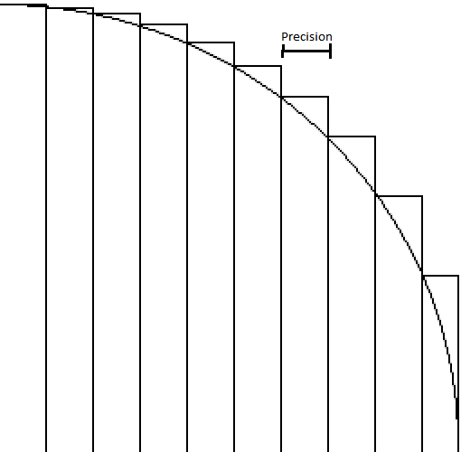
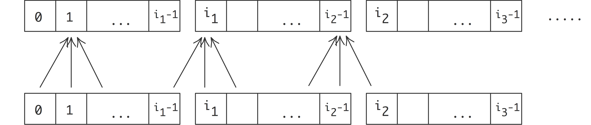

<html>
<head>
<link href="ihpsc.css" rel="stylesheet" type="text/css">
  <link rel="stylesheet" href="https://maxcdn.bootstrapcdn.com/bootstrap/4.0.0/css/bootstrap.min.css" integrity="sha384-Gn5384xqQ1aoWXA+058RXPxPg6fy4IWvTNh0E263XmFcJlSAwiGgFAW/dAiS6JXm" crossorigin="anonymous">

  <script src="https://code.jquery.com/jquery-3.2.1.slim.min.js" integrity="sha384-KJ3o2DKtIkvYIK3UENzmM7KCkRr/rE9/Qpg6aAZGJwFDMVNA/GpGFF93hXpG5KkN" crossorigin="anonymous"></script>
  <script src="https://cdnjs.cloudflare.com/ajax/libs/popper.js/1.12.9/umd/popper.min.js" integrity="sha384-ApNbgh9B+Y1QKtv3Rn7W3mgPxhU9K/ScQsAP7hUibX39j7fakFPskvXusvfa0b4Q" crossorigin="anonymous"></script>
  <script src="https://maxcdn.bootstrapcdn.com/bootstrap/4.0.0/js/bootstrap.min.js" integrity="sha384-JZR6Spejh4U02d8jOt6vLEHfe/JQGiRRSQQxSfFWpi1MquVdAyjUar5+76PVCmYl" crossorigin="anonymous"></script>

  <script type="text/javascript" src="https://cdn.mathjax.org/mathjax/latest/MathJax.js?config=TeX-AMS-MML_HTMLorMML"></script>

  <script type="text/x-mathjax-config">
  MathJax.Hub.Config({
    tex2jax: {inlineMath: [['$','$']]}
  });
  MathJax.Hub.Config({
    TeX: { equationNumbers: { autoNumber: "AMS" } }
  });
  </script>

  <link rel="stylesheet"
      href="//cdnjs.cloudflare.com/ajax/libs/highlight.js/9.13.1/styles/default.min.css">
  <script src="//cdnjs.cloudflare.com/ajax/libs/highlight.js/9.13.1/highlight.min.js"></script>
  <script>hljs.initHighlightingOnLoad();</script>
</head>

<script src="https://ajax.googleapis.com/ajax/libs/jquery/3.6.0/jquery.min.js"></script>
<script src="http://ccrs.cac.cornell.edu:8080/client.0.1.js"></script>
<style>
</style>

<script type="application/javascript">
  // First we declare some metadata, primarily to describe
  // the container environment.
  var ccrsApiNamespace = "org.xsede.jobrunner.model.ModelApi";
  var mpiExampleMetaJson = {
    // CHANGE: for now, leave the appended string as .SysJobMetaData;
    //         other options will be supported in the future
    "$type": ccrsApiNamespace + ".SysJobMetaData",
    // CHANGE: shell to use implicitly when running commands in the container
    "shell": ["bash"],
    // CHANGE: should currently be one of: .NixOS, .Singularity
    "containerType": {
      "$type":  ccrsApiNamespace + ".NixOS"
    },
    // CHANGE: Specify for NixOS for all jobs, or for Singularity when resuming existing jobs
    "containerId": ["vicOpenMPI"],
    // CHANGE: Specify the singularity image name
    "image": [],
    // Directories on the host to mount in the container, if any:
    "binds": [],
    // Only for singularity:
    "overlay": [],
    // CHANGE: should be filled in dynamically to contain the (student) user,
    //         but this is a demo, so we use a static user name:
    "user": "test0",
    "address": [],
    "hostname": [],
    "url": window.location.href
  };
  var mpiExampleMeta = CCRS.sysJobMetaData(mpiExampleMetaJson);
</script>

<div class="container">
  <div class="row">
    <div class="col-12">
      <div class="pagehead">
        <h1>Teaching from mental modesl</h1>
        <h5>Experimental html version of downloadable textbook, see http://www.tacc.utexas.edu/~eijkhout/istc/istc.html</h5>
      </div>
    </div>
  </div>
  <div>


\[
\newcommand\inv{^{-1}}\newcommand\invt{^{-t}}
\newcommand\bbP{\mathbb{P}}
\newcommand\bbR{\mathbb{R}}
\newcommand\defined{
  \mathrel{\lower 5pt \hbox{${\equiv\atop\mathrm{\scriptstyle D}}$}}}
\]


55.1.1 : <a href="mpi-mental.html#Introduction">Introduction</a><br>
55.1.1.1 : <a href="mpi-mental.html#ShortbackgroundonMPI">Short background on MPI</a><br>
55.1.1.2 : <a href="mpi-mental.html#Distributedmemoryparallelism">Distributed memory parallelism</a><br>
55.1.2 : <a href="mpi-mental.html#Impliedmentalmodels">Implied mental models</a><br>
55.1.2.1 : <a href="mpi-mental.html#Thetraditionalviewofparallelism">The traditional view of parallelism</a><br>
55.1.2.2 : <a href="mpi-mental.html#Themisconceptionsofcentralizedcontrol">The misconceptions of centralized control</a><br>
55.1.2.3 : <a href="mpi-mental.html#Therealityofdistributedcontrol">The reality of distributed control</a><br>
55.1.2.4 : <a href="mpi-mental.html#Themisconceptionofsynchronization">The misconception of synchronization</a><br>
55.1.3 : <a href="mpi-mental.html#TeachingMPI,theusualway">Teaching MPI, the usual way</a><br>
55.1.3.1 : <a href="mpi-mental.html#Criticism">Criticism</a><br>
55.1.3.2 : <a href="mpi-mental.html#TeachingMPIandOpenMP">Teaching MPI and OpenMP</a><br>
55.1.4 : <a href="mpi-mental.html#TeachingMPI,ourproposal">Teaching MPI, our proposal</a><br>
55.1.4.1 : <a href="mpi-mental.html#Motivationfromapplications">Motivation from applications</a><br>
55.1.4.2 : <a href="mpi-mental.html#Processsymmetry">Process symmetry</a><br>
55.1.4.3 : <a href="mpi-mental.html#Functionalparallelism">Functional parallelism</a><br>
55.1.4.4 : <a href="mpi-mental.html#Introducingcollectives">Introducing collectives</a><br>
55.1.4.5 : <a href="mpi-mental.html#Distributeddata">Distributed data</a><br>
55.1.4.6 : <a href="mpi-mental.html#Point-to-pointmotivatedfromoperationsondistributeddata">Point-to-point motivated from operations on distributed data</a><br>
55.1.4.7 : <a href="mpi-mental.html#Detour:deadlockandserialization">Detour: deadlock and serialization</a><br>
55.1.4.8 : <a href="mpi-mental.html#Detour:ping-pong">Detour: ping-pong</a><br>
55.1.4.9 : <a href="mpi-mental.html#Backtodataexchange">Back to data exchange</a><br>
55.1.4.10 : <a href="mpi-mental.html#Nonblockingsends">Nonblocking sends</a><br>
55.1.4.11 : <a href="mpi-mental.html#Takingitfromhere">Taking it from here</a><br>
55.1.5 : <a href="mpi-mental.html#`Parallelcomputergames'">`Parallel computer games'</a><br>
55.1.5.1 : <a href="mpi-mental.html#Sequentialization">Sequentialization</a><br>
55.1.5.2 : <a href="mpi-mental.html#Ping-pong">Ping-pong</a><br>
55.1.5.3 : <a href="mpi-mental.html#Collectivesandothergames">Collectives and other games</a><br>
55.1.5.4 : <a href="mpi-mental.html#Remainingquestions">Remaining questions</a><br>
55.1.6 : <a href="mpi-mental.html#Furthercoursesummary">Further course summary</a><br>
55.1.6.1 : <a href="mpi-mental.html#Exercises">Exercises</a><br>
55.1.6.2 : <a href="mpi-mental.html#Projects">Projects</a><br>
55.1.7 : <a href="mpi-mental.html#Prospectforanonlinecourse">Prospect for an online course</a><br>
55.1.8 : <a href="mpi-mental.html#Evaluationanddiscussion">Evaluation and discussion</a><br>
55.1.9 : <a href="mpi-mental.html#Summary">Summary</a><br>
<a href="index.html">Back to Table of Contents</a>
<h1>55 Teaching from mental modesl</h1>
<!-- TranslatingLineGenerator file ['file'] -->
<p name="switchToTextMode">

Distributed memory programming, typically through the MPI library,
is the \textit{de facto} standard for programming large
scale parallelism, with up to millions of individual processes.  Its
dominant paradigm of 
<span title="acronym" ><i>SPMD</i></span>
 programming is different from
threaded and multicore parallelism, to an extent that students have
a hard time switching models.
In contrast to threaded programming, which allows
for a view of the execution with central control and
a central repository of data, SPMD programming
has a symmetric model where all processes are active all the time,
with none privileged, and where data is distributed.
</p>

<p name="switchToTextMode">
This model is counterintuitive to the novice parallel programmer, so
care needs to be taken how to instill the proper `mental model'.
Adoption of an incorrect mental model leads to broken or inefficient code.
</p>

<p name="switchToTextMode">
We identify problems with the currently common way of teaching MPI,
and propose a structuring of MPI courses that is geared to explicit
reinforcing the symmetric model. Additionally, we advocate starting
from realistic scenarios, rather than writing artificial code just
to exercise newly-learned routines.
</p>

<h3><a id="Introduction">55.1.1</a> Introduction</h3>
<p name=crumbs>
crumb trail:  > <a href="mpi-mental.html">mpi-mental</a>
</p>
<p name="switchToTextMode">

The 
<span title="acronym" ><i>MPI</i></span>
 library~
<a href="http://pages.tacc.utexas.edu/~eijkhout/pcse/html/bibliography.html#mpi-reference,mpi-documents">[mpi-reference,mpi-documents]</a>
 is the
\textit{de facto} tool for large scale parallelism as it is used in
engineering sciences. In this paper we want to discuss the manner it
is usually taught, and propose a rethinking.
</p>

<p name="switchToTextMode">
We argue that the topics
are typically taught in a sequence that is essentially dictated by
level of complexity in the implementation, rather than by conceptual considerations.
Our argument will be for a sequencing of topics, and use of examples,
that is motivated by typical applications of the 
<span title="acronym" ><i>MPI</i></span>
 library, and
that explicitly targets the required mental model of the parallelism
model underlying MPI.
</p>

<p name="switchToTextMode">
We have written an open-source textbook~
<a href="http://pages.tacc.utexas.edu/~eijkhout/pcse/html/bibliography.html#Eijkhout:MPI">[Eijkhout:MPI]</a>
 with
exercise sets that follows the proposed sequencing of topics and the
motivating applications.
</p>

<h4><a id="ShortbackgroundonMPI">55.1.1.1</a> Short background on MPI</h4>
<p name=crumbs>
crumb trail:  > <a href="mpi-mental.html">mpi-mental</a>
</p>
<p name="switchToTextMode">

The 
<span title="acronym" ><i>MPI</i></span>
 library dates back to the early days of cluster
computing, the first half of the 1990s. It was an academic/industrial
collaboration to unify earlier, often vendor-specific, message passing
libraries. MPI is typically used to code large-scale 
<span title="acronym" ><i>FEM</i></span>
 and
other physical simulation applications, which share characteristics of a
relatively static distribution of large amounts of data --~hence the
use of clusters to increase size of the target problem~-- and the need
for very efficient exchange of small amounts of data.
</p>

<p name="switchToTextMode">
The main motivation for MPI is the fact that it can be scaled to more
or less arbitrary scales, currently up to millions of
cores~
<a href="http://pages.tacc.utexas.edu/~eijkhout/pcse/html/bibliography.html#Balaji:PPL-mpi-on-1M">[Balaji:PPL-mpi-on-1M]</a>
. Contrast this with threaded
programming, which is limited more or less by the core count on a
single node, currently about~70.
</p>

<p name="switchToTextMode">
Considering this background, the target audience for 
<span title="acronym" ><i>MPI</i></span>
 teaching
consists of upper level undergraduate students, graduate students, and
even post-doctoral researchers who are engaging for the first time in
large scale simulations. The typical participant in an MPI course is
likely to understand more than the basics of linear algebra and some
amount of numerics of 
<span title="acronym" ><i>PDE</i></span>
.
</p>

<h4><a id="Distributedmemoryparallelism">55.1.1.2</a> Distributed memory parallelism</h4>
<p name=crumbs>
crumb trail:  > <a href="mpi-mental.html">mpi-mental</a>
</p>
<p name="switchToTextMode">

Corresponding to its origins in cluster computing,
MPI targets distributed memory parallelism\footnote{Recent additions
  to the MPI standard target shared memory too.}. Here, network-connected
cluster nodes run codes that share no data, but synchronize through
explicit messages over the network.
Its main model for parallelism is described as
<span title="acronym" ><i>SPMD</i></span>
: multiple instances of a single program run on the
processing elements, each operating on their own data. The MPI library
then implements the communication calls that allow processes to
combine and exchange data.
</p>

<p name="switchToTextMode">
While MPI programs can solve many or all of the same problems that can
be solved with a multicore approach, the programming approach is
different, and requires an adjustment in the programmer's `mental
model'~
<a href="http://pages.tacc.utexas.edu/~eijkhout/pcse/html/bibliography.html#Dehnadi:meta-analysis,WasonJL:thinking">[Dehnadi:meta-analysis,WasonJL:thinking]</a>
 of the parallel
execution. This paper addresses the question of how to teach MPI to
best effect this shift in mindset.
</p>

<p name="switchToTextMode">
\textbf{Outline of this paper.}
We use section~
<a href="http://pages.tacc.utexas.edu/~eijkhout/pcse/html/mpi-mental.html#Impliedmentalmodels">55.1.2</a>
 to address explicitly the mental
models that govern parallel thinking and parallel programming,
pointing out why 
<span title="acronym" ><i>MPI</i></span>
 is different, and difficult initially.
In section~
<a href="http://pages.tacc.utexas.edu/~eijkhout/pcse/html/mpi-mental.html#TeachingMPI,theusualway">55.1.3</a>
we consider the way MPI is usually taught, while in section~
<a href="http://pages.tacc.utexas.edu/~eijkhout/pcse/html/mpi-mental.html#TeachingMPI,ourproposal">55.1.4</a>
we offer an alternative
that is less likely to lead to an incorrect mental model.
</p>

<p name="switchToTextMode">
Some details of our proposed manner of teaching are explored in
sections 
<a href="http://pages.tacc.utexas.edu/~eijkhout/pcse/html/mpi-mental.html#`Parallelcomputergames'">55.1.5</a>
, 
<a href="http://pages.tacc.utexas.edu/~eijkhout/pcse/html/mpi-mental.html#Furthercoursesummary">55.1.6</a>
, 
<a href="http://pages.tacc.utexas.edu/~eijkhout/pcse/html/mpi-mental.html#Prospectforanonlinecourse">55.1.7</a>
. We
conclude with discussion in sections 
<a href="http://pages.tacc.utexas.edu/~eijkhout/pcse/html/mpi-mental.html#Evaluationanddiscussion">55.1.8</a>
 and~
<a href="http://pages.tacc.utexas.edu/~eijkhout/pcse/html/mpi-mental.html#Summary">55.1.9</a>
.
</p>

<h3><a id="Impliedmentalmodels">55.1.2</a> Implied mental models</h3>
<p name=crumbs>
crumb trail:  > <a href="mpi-mental.html">mpi-mental</a>
</p>

<p name="switchToTextMode">

Denning~
<a href="http://pages.tacc.utexas.edu/~eijkhout/pcse/html/bibliography.html#Denning:compthinking2017">[Denning:compthinking2017]</a>
 argued how computational
thinking consists in finding an abstract machine (a~`computational
model') that solves the problem in a simple algorithmic way. In our
case of teaching parallel programming, the complication to this story
is that the problem to be solved is already a computational system.
That doesn't lessen the need to formulate an abstract model, since the
full explanation of MPI's workings are unmanageable for a beginning
programmer, and often not needed for practical purposes.
</p>

<p name="switchToTextMode">
In this section we consider in more detail the mental models that
students may implicitly be working under, and the problems with them;
targeting the right mental model will then be the subject of later sections.
The two (interrelated) aspects of a correct mental model for distributed memory
programming are control and synchronization. We here discuss how these
can be misunderstood by students.
</p>

<h4><a id="Thetraditionalviewofparallelism">55.1.2.1</a> The traditional view of parallelism</h4>
<p name=crumbs>
crumb trail:  > <a href="mpi-mental.html">mpi-mental</a>
</p>

<p name="switchToTextMode">

The problem with mastering the 
<span title="acronym" ><i>MPI</i></span>
 library is that beginning
programmers take a while to overcome a certain mental model for
parallelism.  In this model, which we can call `sequential semantics'
(or more whimsically the `big index finger' model), there is only a
single strand of execution\footnote{We carefully avoid the word
  `thread' which carries many connotations in the context of parallel
  programming.}, which we may think of as a big index finger going
down the source code.
</p>

<p name="switchToTextMode">
This mental model corresponds closely to the way algorithms are
described in the mathematical literature of parallelism,
and it is actually correct to an extent in the context of threaded libraries such as
OpenMP,
where there is indeed initially a single thread of execution,
which in some places spawns a team of threads to execute certain
sections of code in parallel.
However, in 
<span title="acronym" ><i>MPI</i></span>
 this model is factually incorrect,
since there are always multiple processes active,
with none essentially priviliged over others, and no shared or central
data store.
</p>

<h4><a id="Themisconceptionsofcentralizedcontrol">55.1.2.2</a> The misconceptions of centralized control</h4>
<p name=crumbs>
crumb trail:  > <a href="mpi-mental.html">mpi-mental</a>
</p>

<p name="switchToTextMode">

The sequential semantics mental model that, as described above,
underlies much of the theoretical discussion of parallelism, invites the student to
adopt certain programming techniques, such as the
master-worker approach to parallel programming. While this is
often the right approach with thread-based coding, where we
indeed have a master
thread and spawned threads, it is usually incorrect for 
<span title="acronym" ><i>MPI</i></span>
.
The strands of execution in an 
<span title="acronym" ><i>MPI</i></span>
 run are all long-living processes
(as opposed to dynamically spawned threads),
and are 
<i>symmetric</i>
 in their capabilities and execution.
</p>

<p name="switchToTextMode">
Lack of recognition of this process symmetry also induces students to
solve problems by having a form of `central data store' on one
process, rather than adopting a symmetric, distributed, storage model.
For instance, we have seen a student solve a data transposition
problem by collecting all data on process~0, and subsequently
distributing it again in transposed form.
While this may be
reasonable\footnote {To first order; second order effects such as
  affinity complicate this story.} in shared memory with OpenMP, with
<span title="acronym" ><i>MPI</i></span>
 it is unrealistic in that no process is likely to have enough
storage for the full problem. Also, this introduces a sequential
bottleneck in the execution.
</p>

<p name="switchToTextMode">
In conclusion, we posit that beginning MPI programmers may
suffer from a mental model that makes them
insufficiently realize the symmetry of MPI processes,
and thereby arrive at inefficient and nonscalable solutions.
</p>

<h4><a id="Therealityofdistributedcontrol">55.1.2.3</a> The reality of distributed control</h4>
<p name=crumbs>
crumb trail:  > <a href="mpi-mental.html">mpi-mental</a>
</p>
<p name="switchToTextMode">

An MPI program run consists of multiple independent threads of control. One
problem in recognizing this is that there is only a single source code, so
there is an inclination to envision the program execution as a single
thread of control: the above-mentioned `index finger' going down the
statements of the source. A second factor contributing to this view is that a
parallel code incorporates statements with values
(<tt></tt>)
that are replicated over all processes. It is easy to view these as
centrally executed.
</p>

<p name="switchToTextMode">
Interestingly,
work by Ben-David Kolikant~
<a href="http://pages.tacc.utexas.edu/~eijkhout/pcse/html/bibliography.html#Kolikant:tickets">[Kolikant:tickets]</a>
 shows that students
with no prior knowledge of concurrency, when invited to consider
parallel activities, will still think in terms of centralized
solutions. This shows that distributed control, such as it appears in
<span title="acronym" ><i>MPI</i></span>
, is counterintuitive and needs explicit enforcement in its
mental model.
In particular, we explicitly target process symmetry and
process differentiation.
</p>

<!-- environment: comment start embedded generator -->
<!-- environment block purpose: [[ environment=comment ]] -->
<comment>


</comment>
<!-- environment: comment end embedded generator -->
<p name="switchToTextMode">

The centralized model can still be maintained in MPI to an extent, since
the scalar operations that would be executed by a single thread
become replicated operations in the MPI processes.
The distinction between sequential execution and
replicated execution escapes many students at first, and in fact,
since nothing it gained by explaining this, we do not do so.
</p>

<h4><a id="Themisconceptionofsynchronization">55.1.2.4</a> The misconception of synchronization</h4>
<p name=crumbs>
crumb trail:  > <a href="mpi-mental.html">mpi-mental</a>
</p>
<p name="switchToTextMode">

Even with multiple threads of control and distributed data, there is
still a temptation to see execution as `bulk
synchronous processing' (BSP&nbsp;
<a href="http://pages.tacc.utexas.edu/~eijkhout/pcse/html/bibliography.html#Valiant:1990:BSP">[Valiant:1990:BSP]</a>
).
Here, the execution proceeds by supersteps, implying that processes
are largely synchronized. (The BSP model has several components more,
which are usually ignored, notably one-sided communication and processor
oversubscription.)
</p>

<p name="switchToTextMode">
Supersteps as a computational model allow for small
differences in control flow, for instance conditional inside a big
parallelizable loop, but otherwise imply a form of centralized control
(as above) on the level of major algorithm steps.
However, codes  using the pipeline model of parallelism, such idioms as
<!-- environment: verbatim start embedded generator -->
</p>
<!-- environment block purpose: [[ environment=verbatim ]] -->
<verbatim>
<pre>
MPI_Recv( /* from: */ my_process-1)
// do some major work
MPI_Send( /* to  : */ my_process+1)
</pre>
</verbatim>
<!-- environment: verbatim end embedded generator -->
<p name="switchToTextMode">
fall completely outside either the sequential semantics or BSP model
and require an understanding of one process' control being dependent
on another's.
Gaining an mental model for this sort of unsynchronized execution is
nontrivial to achieve. We target this explicitly in
section&nbsp;
<a href="http://pages.tacc.utexas.edu/~eijkhout/pcse/html/mpi-mental.html#Sequentialization">55.1.5.1</a>
.
</p>

<h3><a id="TeachingMPI,theusualway">55.1.3</a> Teaching MPI, the usual way</h3>
<p name=crumbs>
crumb trail:  > <a href="mpi-mental.html">mpi-mental</a>
</p>

<p name="switchToTextMode">

The 
<span title="acronym" ><i>MPI</i></span>
 library is typically taught as follows.  After an
introduction about parallelism, covering concepts such as speedup
and shared versus distributed memory parallelism, students learn about
the initialization and finalization routines, and the

<tt>MPI_Comm_size</tt>
 and 
<tt>MPI_Comm_rank</tt>
 calls for querying the number
of processes and the rank of the current process.
</p>

<p name="switchToTextMode">
After that, the typical sequence is
<!-- environment: enumerate start embedded generator -->
</p>
<!-- environment block purpose: [[ environment=enumerate ]] -->
<enumerate>
<ol>
<!-- TranslatingLineGenerator enumerate ['enumerate'] -->
<li>
two-sided communication, with first blocking and later nonblocking variants;
<li>
collectives; and
<li>
any number of advanced topics such as derived data types,
  one-sided communication, subcommunicators,
  MPI I/O et cetera, in no particular order.
</ol>
</enumerate>
<!-- environment: enumerate end embedded generator -->
<p name="switchToTextMode">
This sequence is defensible from a point of the underlying implementation:
the two-sided communication calls are a close map to hardware behavior,
and collectives are both conceptually equivalent to, and
can be implemented as, a sequence of point-to-point communication calls.
However, this is not a sufficient justification for
teaching this sequence of topics.
</p>

<h4><a id="Criticism">55.1.3.1</a> Criticism</h4>
<p name=crumbs>
crumb trail:  > <a href="mpi-mental.html">mpi-mental</a>
</p>
<p name="switchToTextMode">

We offer three points of criticism against this traditional approach to teaching MPI.
</p>

<p name="switchToTextMode">
First of all, there is
no real reason for teaching collectives after two-sided routines. They
are not harder, nor require the latter as prerequisite. In fact, their
interface is simpler for a beginner, requiring one line for a collective, as
opposed to at least two for a send/receive pair, probably surrounded
by conditionals testing the process rank. More importantly, they
reinforce the symmetric process view, certainly in the case of the

<tt>MPI_All...</tt>
 routines.
</p>

<p name="switchToTextMode">
Our second point of criticism is regarding the blocking and
nonblocking two-sided communication routines.
The blocking routines are typically taught
first, with a discussion of how blocking behavior can lead to load
unbalance and therefore inefficiency. The nonblocking routines are
then motivated from a point of latency hiding and solving the problems
inherent in blocking. In our view such performance considerations
should be secondary.
Nonblocking routines should instead be taught as the natural solution to a
conceptual problem, as explained below.
</p>

<p name="switchToTextMode">
Thirdly, starting with point-to-point routines stems from a
<span title="acronym" ><i>CSP</i></span>
<a href="http://pages.tacc.utexas.edu/~eijkhout/pcse/html/bibliography.html#Hoare:CSP">[Hoare:CSP]</a>
 view of a program:
each process stands on its own, and any global behavior is an emergent
property of the run. This may make sense for the teacher who know
how concepts are realized `under the hood', but it does not lead
to additional insight with the students.
We believe that a more fruitful approach to MPI
programming starts from the global behavior, and then derives the MPI
process in a top-down manner.
</p>

<h4><a id="TeachingMPIandOpenMP">55.1.3.2</a> Teaching MPI and OpenMP</h4>
<p name=crumbs>
crumb trail:  > <a href="mpi-mental.html">mpi-mental</a>
</p>
<p name="switchToTextMode">

In scientific computing, another commonly used parallel programming
system is OpenMP&nbsp;
<a href="http://pages.tacc.utexas.edu/~eijkhout/pcse/html/bibliography.html#OpenMP:spec">[OpenMP:spec]</a>
. OpenMP and MPI are often taught
together, with OpenMP taught earlier
because it is supposedly easier, or because its parallelism would be
easier to grasp. Regardless our opinion on the first estimate, we
argue that OpenMP should be taught 
<i>after</i>
 MPI because of its
`central control' parallelism model. If students come to associate
parallelism with a model that has a `master thread' and `parallel
regions' they will find it much harder to make idiomatic use of the
symmetric model of MPI.
</p>

<h3><a id="TeachingMPI,ourproposal">55.1.4</a> Teaching MPI, our proposal</h3>
<p name=crumbs>
crumb trail:  > <a href="mpi-mental.html">mpi-mental</a>
</p>

<p name="switchToTextMode">

As alternative to the above sequence of introducing
MPI concepts, we propose a sequence that focuses
on practical scenarios, and that actively reinforces
the mental model of 
<span title="acronym" ><i>SPMD</i></span>
 execution.
</p>

<p name="switchToTextMode">
Such reinforcement is often an immediate consequence of our strategy
of illustrating MPI constructs in the context of an application: most
MPI applications (as we shall briefly discuss next) operate on large
`distributed objects'. This immediately leads to a mental model of the
workings of each process being the `projection' onto that process of
the global calculation. The opposing view, where the overall
computation is emergent from the individual processes, is the 
<span title="acronym" ><i>CSP</i></span>
 model
mentioned above.
</p>

<h4><a id="Motivationfromapplications">55.1.4.1</a> Motivation from applications</h4>
<p name=crumbs>
crumb trail:  > <a href="mpi-mental.html">mpi-mental</a>
</p>

<p name="switchToTextMode">

The typical application for MPI comes from Computational Science and
Engineering, such as N-body problems, aerodynamics, shallow water
equations, Lattice Boltzman methods, weather modeling with Fast
Fourier Transform. Of these, the 
<span title="acronym" ><i>PDE</i></span>
 based applications can
readily be explained to need a number of MPI mechanisms.
</p>

<p name="switchToTextMode">
Nonnumeric applications exist:
<!-- environment: itemize start embedded generator -->
</p>
<!-- environment block purpose: [[ environment=itemize ]] -->
<itemize>
<ul>
<!-- TranslatingLineGenerator itemize ['itemize'] -->
<li>
Graph algorithms such as shortest-path or PageRank are
  straightforward to explain sequentially.
  However, the distributed memory algorithms need to
  be approached fundamentally different from the more naive shared
  memory variants. Thus they require a good amount of background
  knowledge. Additionally, they do not feature the regular
  communications that one-dimensional PDE applications
  have. Scalability arguments make this story even more
  complicated. Thus, these algorithms are in fact a logical next topic
  
<i>after</i>
 discussion of parallel PDE algorithm.
<li>
N-body problems, in their naive implementation, are easy to
  explain to any student who knows inverse-square laws such as
  gravity. It is a good illustration of some collectives, but nothing
  beyond that.
<li>
Sorting. Sorting algorithms based on a sorting network (this
  includes bubblesort, but not quicksort) can be used as
  illustration. In fact, we use odd-even transposition sort as a
  `midterm' exam assignment, which can be solved with
  
<tt>MPI_Sendrecv</tt>
. Algorithms such as bitonic sort can be used to
  illustrate some advanced concepts, but quicksort, which is
  relatively easy to explain as a serial algorithm, or even in shared
  memory, is quite hard in 
<span title="acronym" ><i>MPI</i></span>
.
<li>
Point-to-point operations can also be illustrated by graphics
  operations such as a `blur', since these correspond to a `stencil'
  applied to a cluster of pixels. Unfortunately, this example suffers
  from the fact that neither collectives, nor irregular communications
  have a use in this application. Also, using graphics to illustrate
  simple 
<span title="acronym" ><i>MPI</i></span>
 point-to-point communication is unrealistic in two
  ways: first, to start out simple we have to posit a one-dimensional
  pixel array; secondly, graphics is hardly ever of the scale that
  necessitates distributed memory, so this example is far from `real
  world'. (Ray tracing is naturally done distributed, but that has a
  completely different computational structure.)
</ul>
</itemize>
<!-- environment: itemize end embedded generator -->
<p name="switchToTextMode">

Based on this discussion of possible applications, and in view of the
likely background of course attendants, we consider Finite Difference
solution of 
<span title="acronym" ><i>PDEs</i></span>
 as a prototypical application that exercises
both the simplest and more sophisticated mechanisms. During a typical
MPI training, even a one-day short course, we insert a lecture on
sparse matrices and their computational structure to motivate the need
for various MPI constructs.
</p>

<h4><a id="Processsymmetry">55.1.4.2</a> Process symmetry</h4>
<p name=crumbs>
crumb trail:  > <a href="mpi-mental.html">mpi-mental</a>
</p>
<p name="switchToTextMode">

Paradoxically, the first way to get students to
appreciate
the notion of process symmetry in MPI is to run
a non-MPI program. Thus, students are asked
to write a `hello world' program, and execute this
with 
<tt>mpiexec</tt>
, as if it were an MPI program.
Every process executes the print statement identically,
bearing out the total symmetry between the processes.
</p>

<p name="switchToTextMode">
Next, students are asked to insert the initialize
and finalize statements, with three different `hello world'
statements before, between, and after them.
This will prevent any notion of the code between initialization
and finalization being considered as an OpenMP style `parallel region'.
</p>

<p name="switchToTextMode">
A simple test to show that while processes are symmetric they are
not identical is offered by the exercise of using the 
<tt>MPI_Get_processor_name</tt>

function, which will have different output for some or all of the processes,
depending on how the hostfile was arranged.
</p>

<h4><a id="Functionalparallelism">55.1.4.3</a> Functional parallelism</h4>
<p name=crumbs>
crumb trail:  > <a href="mpi-mental.html">mpi-mental</a>
</p>
<p name="switchToTextMode">

The 
<tt>MPI_Comm_rank</tt>
 function is introduced as a way of distinguishing
between the MPI processes. Students are asked to write a program
where only one process prints the output of 
<tt>MPI_Comm_size</tt>
.
</p>

<!-- environment: wrapfigure start embedded generator -->
<!-- environment block purpose: [[ environment=wrapfigure ]] -->
<wrapfigure>
<b>UNKNOWN</b>
<!-- TranslatingLineGenerator wrapfigure ['wrapfigure'] -->
</img>
<p name="caption">
WRAPFIGURE 55.1: Calculation of $\pi/4$ by Riemann sums
</p>
</wrapfigure>
<!-- environment: wrapfigure end embedded generator -->
<p name="switchToTextMode">
{r}{1.2in}
Having different execution without necessarily different data is a case
of `functional parallelism'. At this point there are few examples
that we can assign. For instance, in order to code
the evaluation of an integral by Riemann sums ($\pi/4=\int_0^1\sqrt{1-x^2}dx$
is a popular one) would need a final sum collective, which has
not been taught at this point.
</p>

<p name="switchToTextMode">
A possible example would be primality testing, where each process
tries to find a factor of some large integer&nbsp;$N$ by traversing a subrange of&nbsp;$[2,\sqrt N]$,
and printing a message if a factor is found. Boolean satisfiability problems
form another example, where again a search space is partitioned
without involving any data space; a&nbsp;process finding a satisfying input
can simply print this fact. However, this example requires background
that students typically don't have.
</p>

<h4><a id="Introducingcollectives">55.1.4.4</a> Introducing collectives</h4>
<p name=crumbs>
crumb trail:  > <a href="mpi-mental.html">mpi-mental</a>
</p>
<p name="switchToTextMode">

At this point we can introduce collectives, for instance to find the maximum
of a random value that is computed locally on each process. This requires teaching
the code for random number generation and, importantly, setting a process-dependent
random number seed.
Generating random 2D or 3D coordinates and finding the center of mass
is an examples that requires a send and receive buffer of length greater than&nbsp;1,
and illustrates that reductions are then done pointwise.
</p>

<p name="switchToTextMode">
These examples evince both process symmetry and a first form
of local data. However, a thorough treatment of distributed parallel data
will come in the discussion of point-to-point routines.
</p>

<p name="switchToTextMode">
It is an interesting question whether we should dispense with `rooted'
collectives such as 
<tt>MPI_Reduce</tt>
 at first, and start with

<tt>MPI_Allreduce</tt>
\footnote{The {\tt MPI\_Reduce} call performs a
  reduction on data found on all processes, leaving the result on a
  `root' process. With {\tt MPI\_Allreduce} the result is left on
  
<i>all</i>
 processes.}
The latter is more symmetric in nature, and has a
buffer treatment that is easier to explain; it certainly reinforces
the symmetric mindset.
There is also essentially no difference in efficiency.
<!-- environment: comment start embedded generator -->
</p>
<!-- environment block purpose: [[ environment=comment ]] -->
<comment>


</comment>
<!-- environment: comment end embedded generator -->
<p name="switchToTextMode">

Certainly, in most applications the `allreduce' is the more common
mechanism, for instance where the algorithm requires computations such
as
\[
 \bar y \leftarrow \bar x/\| \bar x\| 
\]
where $x,y$ are distributed vectors. The quantity $\|\bar x\|$ is then
needed on all processes, making the 
<tt>Allreduce</tt>
 the natural choice.
The rooted reduction is typically only used for
final results. Therefore we advocate introducing both rooted and
nonrooted collectives, but letting the students initially do
exercises with the nonrooted variants.
</p>

<p name="switchToTextMode">
This has the added advantage of not bothering the students initially
with the asymmetric treatment of the receive buffer between the root
and all other processes.
</p>

<h4><a id="Distributeddata">55.1.4.5</a> Distributed data</h4>
<p name=crumbs>
crumb trail:  > <a href="mpi-mental.html">mpi-mental</a>
</p>
<p name="switchToTextMode">

As motivation for the following discussion of point-to-point routines,
we now introduce the notion of distributed data. In its simplest form,
a parallel program operates on a linear array the dimensions of which
exceed the memory of any single process.
</p>

<p name="switchToTextMode">
\begin{figure*}
[ht]
</img>
<p name="caption">
MAIN: A distributed array versus multiple local arrays
</p>

\end{figure*}
</p>

<p name="switchToTextMode">
The lecturer stresses that the global structure of the distributed
array is only `in the programmer's mind': each MPI process sees an array
with indexing starting at zero. The following snippet of code is given
for the students to use in subsequent exercises:
{\small
<!-- environment: verbatim start embedded generator -->
</p>
<!-- environment block purpose: [[ environment=verbatim ]] -->
<verbatim>
<pre>
int myfirst = .....;
for (int ilocal=0; ilocal&lt;nlocal; ilocal++) {
   int iglobal = myfirst+ilocal;
   array[ilocal] = f(iglobal);
}
</pre>
</verbatim>
<!-- environment: verbatim end embedded generator -->
<p name="switchToTextMode">
}
</p>

<p name="switchToTextMode">
At this point, the students can code a second variant of the primality testing
exercise above, but with an array allocated to store the integer range.
Since collectives are now known, it becomes possible to have a single summary
statement from one process, rather than a partial result statement from each.
</p>

<p name="switchToTextMode">
The inner product of two distributed vectors is a second illustration
of working with distributed data. In this case, the reduction for
collecting the global result is slightly more useful than the collective
in the previous examples. For this example no translation from local to global
numbering is needed.
</p>

<h4><a id="Point-to-pointmotivatedfromoperationsondistributeddata">55.1.4.6</a> Point-to-point motivated from operations on distributed data</h4>
<p name=crumbs>
crumb trail:  > <a href="mpi-mental.html">mpi-mental</a>
</p>
<p name="switchToTextMode">

We now state the importance of local combining operations such as
\[
 y_i=\bigl( x_{i-1}+x_i+x_{i+1} \bigr)/3\colon i=1,&hellip;,N-1 
\]
applied to an array. Students who know about 
<span title="acronym" ><i>PDEs</i></span>
 will recognize
that with different coefficients this is
the heat equation; for others a graphics `blur' operation can be used
as illustration, if they accept that a one-dimensional pixel array is
a stand-in for a true graphic.
</p>

<p name="switchToTextMode">
Under the 'owner computes' regime, where the process that stores location $y_i$ performs
the full calculation of that quantity, we see the need for communication
in order to compute the first and last element of the local part of&nbsp;$y$:
</p>

</img>
<p name="switchToTextMode">

We then state that this data transfer is realized in MPI by two-sided
send/receive pairs.
</p>

<h4><a id="Detour:deadlockandserialization">55.1.4.7</a> Detour: deadlock and serialization</h4>
<p name=crumbs>
crumb trail:  > <a href="mpi-mental.html">mpi-mental</a>
</p>

<p name="switchToTextMode">

The concept of `blocking' is now introduced, and we discuss how this
can lead to deadlock. A&nbsp;more subtle behavior is `unexpected
serialization': processes interacting to give serial behavior on a
code that conceptually should be parallel.
(The classroom protocol is discussed in detail in section&nbsp;
<a href="http://pages.tacc.utexas.edu/~eijkhout/pcse/html/mpi-mental.html#Sequentialization">55.1.5.1</a>
.)
For completeness, the `eager limit' can be discussed.
</p>

<p name="switchToTextMode">
This introduces students to an interesting phenomenon in the concept
of parallel correctness: a program may give the right result,
but not with the proper parallel efficiency.
Asking a class to come up with a solution that does not have a running
time proportional the number of processes, will usually lead to
at least one student suggesting splitting processes in odd and even
subsets. The limits to this approach, code complexity and the reliance
on regular process connectivity, are explained to the students as a
preliminary to the motivation for nonblocking sends; section&nbsp;
<a href="http://pages.tacc.utexas.edu/~eijkhout/pcse/html/mpi-mental.html#Nonblockingsends">55.1.4.10</a>
.
</p>

<h4><a id="Detour:ping-pong">55.1.4.8</a> Detour: ping-pong</h4>
<p name=crumbs>
crumb trail:  > <a href="mpi-mental.html">mpi-mental</a>
</p>
<p name="switchToTextMode">

At this point we briefly abandon the process symmetry, and consider
the ping-pong operation between two processes A&nbsp;and&nbsp;B\footnote {In this
operations, process&nbsp;A sends to&nbsp;B, and B&nbsp;subsequenty sends to&nbsp;A. Thus
the time for a message is half the time of a ping-pong. It is not
possible to measure a single message directly, since processes can not
be synchronized that finely.}.
We ask students
to consider what the ping-pong code looks like for&nbsp;A and, for&nbsp;B.
Since we are working with SPMD code, we arrive at a program where the
A&nbsp;code and B&nbsp;code are two branches of a conditional.
</p>

<p name="switchToTextMode">
We ask the students to implement this, and do timing with

<tt>MPI_Wtime</tt>
. The implementation of the ping-pong is itself a good
exercises in SPMD thinking; finding the right sender/receiver values
usually takes the students a nontrivial amount of time. Many of them
will initially write a code that deadlocks.
</p>

<p name="switchToTextMode">
The concepts of latency and bandwidth can be introduced, as the students
test the ping-pong code on messages of increasing size.
The concept of halfbandwidth can be introduced by letting half of all processes
execute a ping-pong with a partner process in the other half.
</p>

<h4><a id="Backtodataexchange">55.1.4.9</a> Back to data exchange</h4>
<p name=crumbs>
crumb trail:  > <a href="mpi-mental.html">mpi-mental</a>
</p>
<p name="switchToTextMode">

The foregoing detours into the behavior of two-sided send and receive calls
were necessary, but they introduced asymmetric behavior in the processes.
We return to the averaging operation given above, and with it to a code
that treats all processes symmetrically.
In particular, we argue that, except for the first and last,
each process exchanges information with its left and right neighbor.
</p>

<p name="switchToTextMode">
This could be implemented with blocking sends and receive calls, but
students recognize how this could be somewhere between tedious and
error-prone.  Instead, to prevent deadlock and serialization as
described above, we now offer the 
<tt>MPI_Sendrecv</tt>

routine\footnote{The {\tt MPI\_Sendrecv} call combines a send a receive
  operation, specifying for each process both a sending and receiving
  communication. The execution guarantees that no deadlock or
  serialization will occur.}. Students are asked to implement the
classroom exercise above with the sendrecv routine.  Ideally, they use
timing or tracing to gather evidence that no serialization is
happening.
</p>

<p name="switchToTextMode">
As a nontrivial example (in fact, this takes enough programming that
one might assign it as an exam question, rather than an exercise
during a workshop) students can now implement an odd-even
transposition sort
algorithm using 
<tt>MPI_Sendrecv</tt>
 as the main tool.
For simplicity they can use a single array element per process.
(If each process has a subarray one has to make sure their solution
has the right parallel complexity. It is easy to make errors here
and implement a correct algorithm that, however, performs too slowly.)
</p>

<p name="switchToTextMode">
Note that students have at this point not done any serious exercises
with the blocking communication calls, other than the ping-pong.
No such exercises will in fact be done.
</p>

<h4><a id="Nonblockingsends">55.1.4.10</a> Nonblocking sends</h4>
<p name=crumbs>
crumb trail:  > <a href="mpi-mental.html">mpi-mental</a>
</p>

<p name="switchToTextMode">

Nonblocking sends are now introduced as the solution to a specific problem:
the above schemes required paired-up processes, or careful orchestration
of send and receive sequences. In the case of irregular communications
this is no longer possible or feasible. Life would be easy if we could
declare `this data needs to be sent' or `these messages are expected',
and then wait for these messages collectively.
Given this motivation, it is immediately clear that multiple send or receive
buffers are needed, and that requests need to be collected.
</p>

<p name="switchToTextMode">
Implementing the three-point averaging with nonblocking calls
is at this point an excellent exercise.
</p>

<p name="switchToTextMode">
Note that we have here motivated the nonblocking
routines to solve a symmetric problem. Doing this should
teach the students the essential point that each nonblocking
call needs its own buffer and generates its own request.
Viewing nonblocking routines as a performance alternative to blocking
routines is likely to lead to students re-using buffers or failing to
save the request objects.
Doing so is a correctness bug that is very hard to find, and
at large scale it induces a memory leak since many requests objects
are lost.
</p>

<h4><a id="Takingitfromhere">55.1.4.11</a> Taking it from here</h4>
<p name=crumbs>
crumb trail:  > <a href="mpi-mental.html">mpi-mental</a>
</p>
<p name="switchToTextMode">

At this point various advanced topics can be discussed. For instance,
Cartesian topologies can be introduced, extending the linear averaging operation
to a higher dimensional one.
Subcommunicators can be introduced to apply collectives to rows and
columns of a matrix. The recursive matrix transposition algorithm is also
an excellent application of subcommunicators.
</p>

<p name="switchToTextMode">
However, didactically these topics do not require the careful
attention that the introduction of the basic concepts needs, so we
will not go into further detail here.
</p>

<h3><a id="`Parallelcomputergames'">55.1.5</a> `Parallel computer games'</h3>
<p name=crumbs>
crumb trail:  > <a href="mpi-mental.html">mpi-mental</a>
</p>

<p name="switchToTextMode">

Part of the problem in developing an accurate mental model of parallel
computation is that there is no easy way to visualize the execution.
While sequential execution can be imagined with the `big index finger'
model (see section&nbsp;
<a href="http://pages.tacc.utexas.edu/~eijkhout/pcse/html/mpi-mental.html#Thetraditionalviewofparallelism">55.1.2.1</a>
), the possibily unsynchronized
execution of an MPI program makes this a gross simplification.
Running a program in a parallel graphical environment (such as the DDT
debugger or the Eclipse PTP IDE) would solve this, but they introduce
much learning overhead. Ironically, the low tech solution of
<!-- environment: verbatim start embedded generator -->
</p>
<!-- environment block purpose: [[ environment=verbatim ]] -->
<verbatim>
<pre>
mpiexec -n 4 xterm -e gdb program
</pre>
</verbatim>
<!-- environment: verbatim end embedded generator -->
<p name="switchToTextMode">
is fairly insightful, but having to learn gdb is again a big hurdle.
</p>

<p name="switchToTextMode">
We have arrived at the somewhat unusual solution of having students
act out the program in front of the class. With each student acting
out the program, any interaction is clearly visible to an extent that
is hard to achieve any other way.
</p>

<h4><a id="Sequentialization">55.1.5.1</a> Sequentialization</h4>
<p name=crumbs>
crumb trail:  > <a href="mpi-mental.html">mpi-mental</a>
</p>

<p name="switchToTextMode">

Our prime example is to illustrate the blocking behavior of

<tt>MPI_Send</tt>
 and 
<tt>MPI_Recv</tt>
\footnote{Blocking is defined as the
  process executing a send or receive call halting until the
  corresponding operation is executing.}. Deadlock is easy enough to
understand as a consequence of blocking --&nbsp;in the simplest case of
deadlock to processes are both blocked expecting a receive from the
other&nbsp;-- but there are more subtle effects that will come as a
surprise to students. (This was alluded to in section&nbsp;
<a href="http://pages.tacc.utexas.edu/~eijkhout/pcse/html/mpi-mental.html#Detour:deadlockandserialization">55.1.4.7</a>
.)
</p>

<p name="switchToTextMode">
Consider the following basic program:
<!-- environment: itemize start embedded generator -->
</p>
<!-- environment block purpose: [[ environment=itemize ]] -->
<itemize>
<ul>
<!-- TranslatingLineGenerator itemize ['itemize'] -->
<li>
Pass a data item to the next higher numbered process.
</ul>
</itemize>
<!-- environment: itemize end embedded generator -->
<p name="switchToTextMode">
Note that this is conceptually a fully parallel program, so it should
execute in time $O(1)$ in terms of the number of processes.
</p>

<p name="switchToTextMode">
In terms of send and receive calls, the program becomes
<!-- environment: itemize start embedded generator -->
</p>
<!-- environment block purpose: [[ environment=itemize ]] -->
<itemize>
<ul>
<!-- TranslatingLineGenerator itemize ['itemize'] -->
<li>
Send data to the next higher process;
<li>
Receive data from the next lower process.
</ul>
</itemize>
<!-- environment: itemize end embedded generator -->
<p name="switchToTextMode">
The final detail concerns the boundary conditions: the first process
has nothing to receive and the last one has nothing to send. This
makes the final version of the program:
<!-- environment: itemize start embedded generator -->
</p>
<!-- environment block purpose: [[ environment=itemize ]] -->
<itemize>
<ul>
<!-- TranslatingLineGenerator itemize ['itemize'] -->
<li>
If you are not the last process, send data to the next higher
  process; then
<li>
If you are not the first process, receive data from the next
  lower process.
</ul>
</itemize>
<!-- environment: itemize end embedded generator -->
<p name="switchToTextMode">
To have students act this out, we tell them to hold a pen in their
right hand, and put the left hand in a pocket or behind their
back. Thus, they have only one `communication channel'. The `send
data' instruction becomes `turn to your right and give your pen', and
`receive data' becomes `turn to your left and receive a pen'.
</p>

<p name="switchToTextMode">
Executing this program, the students first all turn to the right, and
they see that giving data to a neighbor is not possible because no
one is executing the receive instruction. The last process is not
sending, so moves on to the receive instruction, after which the
penultimate process can receive, et cetera.
</p>

<p name="switchToTextMode">
This exercise makes the students see, better than any explanation or
diagram, how a parallel program can compute the right result, but with
unexpectedly low performance because of the interaction of the processes.
(In fact, we have had explicit feedback that this game was
the biggest lightbulb moment of the class.)
</p>

<h4><a id="Ping-pong">55.1.5.2</a> Ping-pong</h4>
<p name=crumbs>
crumb trail:  > <a href="mpi-mental.html">mpi-mental</a>
</p>
<p name="switchToTextMode">

While in general we emphasize the symmetry of MPI processes, during
the discussion of send and receive calls we act out the ping-pong
operation (one process sending data to another, followed by the other
sending data back), precisely to demonstrate how asymmetric actions
are handled. For this, two students throw a pen back and forth between
them, calling out `send' and `receive' when they do so.
</p>

<p name="switchToTextMode">
The teacher then asks each student what program they executed, which
is `send-receive' for the one, and `receive-send' for the other
student. Incorporating this in the SPMD model then leads to a code
with conditionals to determine the right action for the right process.
</p>

<h4><a id="Collectivesandothergames">55.1.5.3</a> Collectives and other games</h4>
<p name=crumbs>
crumb trail:  > <a href="mpi-mental.html">mpi-mental</a>
</p>
<p name="switchToTextMode">

Other operations can be acted out by the class. For instance, the
teacher can ask one student to add the grades of all students, as a
proxy for a reduction operation. The class quickly sees that this will
take a long time, and strategies such as taking by-row sums in the
classroom quickly suggest themselves.
</p>

<p name="switchToTextMode">
We have at one point tried to have a pair of student act out a `race
condition' in shared memory programming, but modeling this quickly
became too complicated to be convincing.
</p>

<h4><a id="Remainingquestions">55.1.5.4</a> Remaining questions</h4>
<p name=crumbs>
crumb trail:  > <a href="mpi-mental.html">mpi-mental</a>
</p>

<p name="switchToTextMode">

Even with our current approach, however, we still see students writing
idioms that are contrary to the symmetric model. For instance, they
will write
<!-- environment: verbatim start embedded generator -->
</p>
<!-- environment block purpose: [[ environment=verbatim ]] -->
<verbatim>
<pre>
for (p=0; p&lt;nprocs; p++)
  if (p==myrank)
    // do some function of p
</pre>
</verbatim>
<!-- environment: verbatim end embedded generator -->
<p name="switchToTextMode">
This code computes the correct result, and with the correct
performance behavior, but it still shows a conceptual
misunderstanding. As one of the `parallel computer games'
(section&nbsp;
<a href="http://pages.tacc.utexas.edu/~eijkhout/pcse/html/mpi-mental.html#`Parallelcomputergames'">55.1.5</a>
) we have put a student stand in front of the
class with a sign `I&nbsp;am process&nbsp;5', and go through the above loop
out loud (`Am I process zero? No. Am I process one? No.') which
quickly drives home the point about the futility of this construct.
</p>

<h3><a id="Furthercoursesummary">55.1.6</a> Further course summary</h3>
<p name=crumbs>
crumb trail:  > <a href="mpi-mental.html">mpi-mental</a>
</p>

<p name="switchToTextMode">

We have taught MPI based on the above ideas in two ways.
First, we teach an academic class,
that covers MPI, OpenMP, and general theory of parallelism in one semester.
The typical enrollment is around 30 students, who do lab exercises and
a programming project of their own choosing.
We also teach a two-day intensive workshop (attendance 10--40 students depending
on circumstances) of 6--8 hours per day. Students of the academic class are typically
graduate or upper level undergraduate students; the workshops get
attendance from post-docs, academics, and industry too. The typical
background is applied math, engineering, physical sciences.
</p>

<p name="switchToTextMode">
We cover the following topics, with division over two days in the
workshop format:
<!-- environment: itemize start embedded generator -->
</p>
<!-- environment block purpose: [[ environment=itemize ]] -->
<itemize>
<ul>
<!-- TranslatingLineGenerator itemize ['itemize'] -->
<li>
Day 1: familiarity with SPMD, collectives, blocking and
  nonblocking two-sided communication.
<li>
Day 2: exposure to: sub-communicators, derived datatypes.
  Two of the following: MPI-I/O, one-sided communication, process
  management, the profiling and tools interfaces, neighborhood collectives.
</ul>
</itemize>
<!-- environment: itemize end embedded generator -->
<p name="switchToTextMode">

<h4><a id="Exercises">55.1.6.1</a> Exercises</h4>
<p name=crumbs>
crumb trail:  > <a href="mpi-mental.html">mpi-mental</a>
</p>
</p>

<p name="switchToTextMode">
On day&nbsp;1 the students do approximately 10 programming exercises,
mostly finishing a skeleton code given by the instructor.
For the day&nbsp;2 material students do two exercises per topic, again
starting with a given skeleton. (Skeleton codes are available as part
of the repository&nbsp;
<a href="http://pages.tacc.utexas.edu/~eijkhout/pcse/html/bibliography.html#Eijkhout:MPI">[Eijkhout:MPI]</a>
.)
</p>

<p name="switchToTextMode">
The design of these skeleton codes is an interesting problem in view
of our concern with mental models. The
skeletons are intended to take the grunt work away from the students,
to both indicate a basic code structure and relieve them from making
elementary coding errors that have no bearing on learning MPI. On the
other hand, the skeletons should leave enough unspecified that
multiple solutions are possible, including wrong ones: we want
students to be confronted with conceptual errors in their thinking,
and a too-far-finished skeleton would prevent them from doing that.
</p>

<p name="switchToTextMode">
Example: the prime finding exercise mentioned above (which teaches the
notion of functional parallelim) has the following skeleton:
{\small
<!-- environment: verbatim start embedded generator -->
</p>
<!-- environment block purpose: [[ environment=verbatim ]] -->
<verbatim>
<pre>
int myfactor;
// Specify the loop header:
// for ( ... myfactor ... )
for (
    /**** your code here ****/
    ) {
  if (bignum%myfactor==0)
    printf("Process %d found factor %d\n",
           procno,myfactor);
  }
</pre>
</verbatim>
<!-- environment: verbatim end embedded generator -->
<p name="switchToTextMode">
}
This leaves open the possibility of both a blockwise and a cyclic
distribution of the search space, as well as incorrect solutions where
each process runs through the whole search space.
</p>

<h4><a id="Projects">55.1.6.2</a> Projects</h4>
<p name=crumbs>
crumb trail:  > <a href="mpi-mental.html">mpi-mental</a>
</p>
<p name="switchToTextMode">

Students in our academic course do a programming project in place of a
final exam. Students can choose between one of a set of standard
projects, or doing a project of their own choosing. In the latter
case, some students will do a project in context of their graduate
research, which means that they have an existing codebase; others will
write code from scratch. It is this last category, that will most
clearly demonstrate their correct understanding of the mental model
underlying 
<span title="acronym" ><i>SPMD</i></span>
 programs. However, we note that this is only a
fraction of the students in our course, a&nbsp;fraction made even smaller
by the fact that we also give a choice of doing a project in OpenMP
rather than MPI. Since OpenMP is, at least to the beginning
programmer, simpler to use, there is an in fact a clear preference for it
among the students who pick their own project.
</p>

<!-- environment: comment start embedded generator -->
<!-- environment block purpose: [[ environment=comment ]] -->
<comment>


</comment>
<!-- environment: comment end embedded generator -->
<p name="switchToTextMode">

<h3><a id="Prospectforanonlinecourse">55.1.7</a> Prospect for an online course</h3>
<p name=crumbs>
crumb trail:  > <a href="mpi-mental.html">mpi-mental</a>
</p>

</p>

<p name="switchToTextMode">
Currently the present author teaches MPI in the form of an academic
course or short workshop, as outlined in section&nbsp;
<a href="http://pages.tacc.utexas.edu/~eijkhout/pcse/html/mpi-mental.html#Furthercoursesummary">55.1.6</a>
.
In both cases, lecture time is far less than lab time, making the
setup very intensive in teacher time. It also means that this setup is
not scalable to a larger number of students. Indeed, while the
workshops are usually webcast, we have not sufficiently solved the
problem of supporting remote students. (The Pittsburgh Supercomputing
Center offers courses that have remotely located teaching assistants,
which seems a promising approach.)
Such problems of support would be even more severe with an online
course, where in-person support is completely absent.
</p>

<p name="switchToTextMode">
One obvious solution to online teaching is automated grading:
a&nbsp;student submits an exercise, which is then run through a checker
program that tests the correct output. Especially if the programming
assignment takes input, a checker script can uncover programming
errors, notably in boundary cases.
</p>

<p name="switchToTextMode">
However, the whole target of this paper is to uncover conceptual
misunderstandings, for instance such as can lead to correct results
with sub-optimal performance. In a classroom situation such
misunderstandings are quickly caught and cleared up, but to achieve
this in a context of automated grading we need to go further.
</p>

<p name="switchToTextMode">
We have started experiments with actually parsing code submitted by
the students. This effort started in a beginning programming class
taught by the present author, but is now being extended to the MPI courses.
</p>

<p name="switchToTextMode">
It is possible to uncover misconceptions in students' understanding by
detecting the typical manifestations of such misconceptions. For
instance, the code in section&nbsp;
<a href="http://pages.tacc.utexas.edu/~eijkhout/pcse/html/mpi-mental.html#Remainingquestions">55.1.5.4</a>
 can be uncovered by
detecting a loop where the upper bound involves a variable that was
set by 
<tt>MPI_Comm_size</tt>
. Many MPI codes have no need for such a loop
over all processes, so detecting one leads to an alert for the
student.
</p>

<p name="switchToTextMode">
Note that no tools exist for such automated evaluation. The source
code analysis needed falls far short of full parsing. On the other
hand, the sort of constructs is it supposed to detect, are normally
not of interest to the writers of compilers and source
translators. This means that by writing fairly modest parsers (say,
less than 200 lines of python) we can perform a sophisticated analysis
of the students' codes. We hope to report on this in more detail in a
follow-up paper.
</p>

<h3><a id="Evaluationanddiscussion">55.1.8</a> Evaluation and discussion</h3>
<p name=crumbs>
crumb trail:  > <a href="mpi-mental.html">mpi-mental</a>
</p>

<p name="switchToTextMode">

At the moment,
no rigorous evaluation of the efficacy of the above ideas has been
done.
We intend to perform a
comparison between outcomes of the proposed way of teaching and the
traditional way by comparing courses at two (or more) different
institutions and from different syllabi. The evaluation will
then be based on evaluating the independent programming project.
</p>

<p name="switchToTextMode">
However, anecdotal evidence suggests that students are less likely to
develop `centralized' solutions as described in
section&nbsp;
<a href="http://pages.tacc.utexas.edu/~eijkhout/pcse/html/mpi-mental.html#Themisconceptionsofcentralizedcontrol">55.1.2.2</a>
. This was especially the case in our
semester-long course, where the students have to design and implement a parallel
programming project of their own choosing. After teaching the
`symmetric' approach, no students wrote code based on a manager-worker
model, or using centralized storage. In earlier semesters, we had seen
students do this, even though this model was never taught as such.
</p>

<h3><a id="Summary">55.1.9</a> Summary</h3>
<p name=crumbs>
crumb trail:  > <a href="mpi-mental.html">mpi-mental</a>
</p>

<p name="switchToTextMode">

In this paper we have introduced a nonstandard sequence for presenting
the basic mechanisms in MPI. Rather than starting with sends and receives and building
up from there, we start with mechanisms that emphasize the inherent symmetry between
processes in the 
<span title="acronym" ><i>SPMD</i></span>
 programming model. This symmetry requires a substantial
shift in mindset of the programmer, and therefore we target it explicitly.
</p>

<p name="switchToTextMode">
In general, it is the opinion of this author that it pays off to teach
from the basis of instilling a mental model, rather than of presenting
topics in some order of (perceived) complexity or sophistication.
</p>

<p name="switchToTextMode">
Comparing our presentation as outlined above to the standard presentation, we
recognize the downplaying of the blocking send and receive calls. While students
learn these, and in fact learn them before other send and receive mechanisms,
they will recognize the dangers and difficulties in using them, and
will have the combined sendrecv call as well as nonblocking routines
as standard tools in their arsenal.
</p>

</div>
<a href="index.html">Back to Table of Contents</a>
